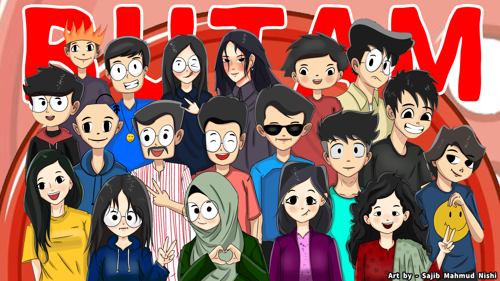

BUTAM Turns 1: A Year of Awesomeness and Underrated Art Rockstars!
Get your party hats on, folks, because it's time to celebrate the first anniversary of BUTAM (Bangladesh's Underground Talented Art Movement). From its humble beginnings, this creative crusader has been shaking up the art scene, making underrated artists feel like rockstars, and spreading joy like a paintbrush dipped in glitter. Let's dive into a year of fun, talent, and artistic mayhem as we toast to the magic of BUTAM!
BUTAM: Where Magic Happens... Online!
Who needs wands and potions when you have a Facebook group? BUTAM's virtual haven has been brewing some serious magic. Painters, writers, musicians, sculptors, and all kinds of creatives unite under the BUTAM banner to showcase their awesomeness and support each other like a tight-knit family. It's like Hogwarts for underrated artists, except without the house points and creepy portraits!
Events & Meet-ups: Artistic Shenanigans Unleashed!
From wild art exhibitions that could rival a circus extravaganza to poetry battles that'd make Shakespeare jealous, BUTAM's events have been off the charts! They've managed to turn meet-ups into epic art parties where creativity and laughter flow like an enchanted river. And who knew artists could party so hard? Move over, wild rock bands; BUTAM artists know how to unleash their creative spirits!
Underrated Artists Get Superpowers!
BUTAM's secret sauce? Empowerment! With their relentless support and encouragement, underrated artists have turned into superheroes of the art world. They're conquering hearts, minds, and hashtags everywhere, proving that talent doesn't need a million followers to shine. Thanks to BUTAM, many artists have discovered their hidden superpowers and are soaring to new heights.
In the past year, BUTAM has transformed strugglers into stars! Some artists, who were once hidden in the shadows, have gone from zero to hero, getting commissions, recognition, and spotlight opportunities like never before. Move over, Van Gogh; BUTAM's army of artists is painting the town with their brilliance!
BUTAM's Future: World Domination (Well, Almost!)
On their birthday, BUTAM isn't slowing down; they're gearing up for world domination (well, almost!). With a year of artistic prowess under their belt, they've got big plans to reach beyond borders and make the whole world groove to their artistic beats. Watch out, Picasso; there's a new art movement in town, and they're ready to paint the world with colors of creativity!
Conclusion:
Happy birthday to the funky, fabulous, and fiercely creative BUTAM! In just one year, they've made a splash in the art world, turning underrated artists into rockstars, inspiring smiles, and spreading the magic of art. Here's to more laughs, more art, and more wild shenanigans in the years to come! Keep slaying, BUTAM, you've got the artistic world under your spell, and we can't wait to see what enchanting wonders you'll bring next! 🎉🎨✨